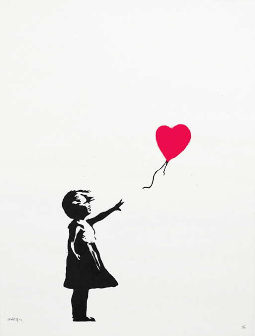
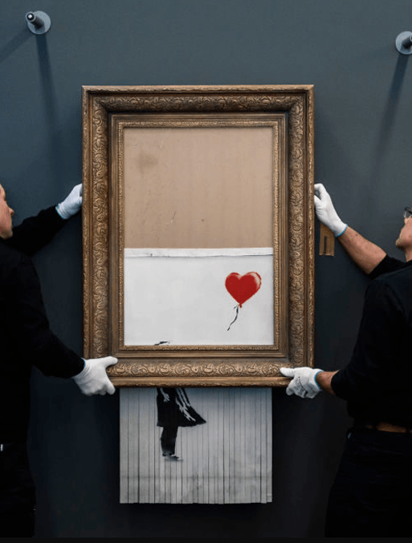

Home
The Art
The Artist
The Influence
ARTIST
BANKSY
 
"We don't exactly know who this artist is. Banksy is a famous - but anonymous - British graffiti artist. He keeps his identity a secret. Although a lot of his art is produced in public places, he usually only reveals it's his after it has appeared on his social media. A lot of his art is done in a particular style which people can easily recognise. Although lots of people have tried to guess who he is, his identity has still not been revealed. Banksy first got noticed for spray-painting trains and walls in his home city of Bristol during the early 1990s. Street art and graffiti can be considered criminal damage, so in the beginning it's thought the artist stayed anonymous to keep out of trouble. In the beginning his pieces were mainly in Bristol, but in the 2000s his artworks started appearing all over the UK and other parts of the world." - BBC News
Banksy chose to use stencils to create his pieces, probably because it's a faster way to paint. He was influenced in his early days by a French graffiti artist called Blek le Rat. Blek le Rat is considered to be the father of stencil graffiti and people sometimes confuse the work of the two artists. "Banksy doesn't only do street art, he's produced drawings, paintings and installation pieces. He even created his own theme park called Dismaland." - BBC News
SLAVA UKRAINI